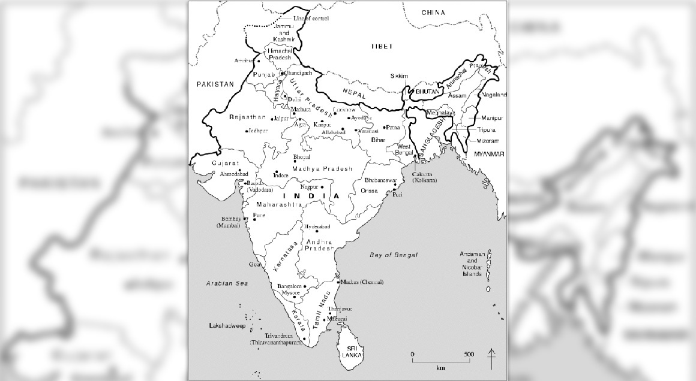
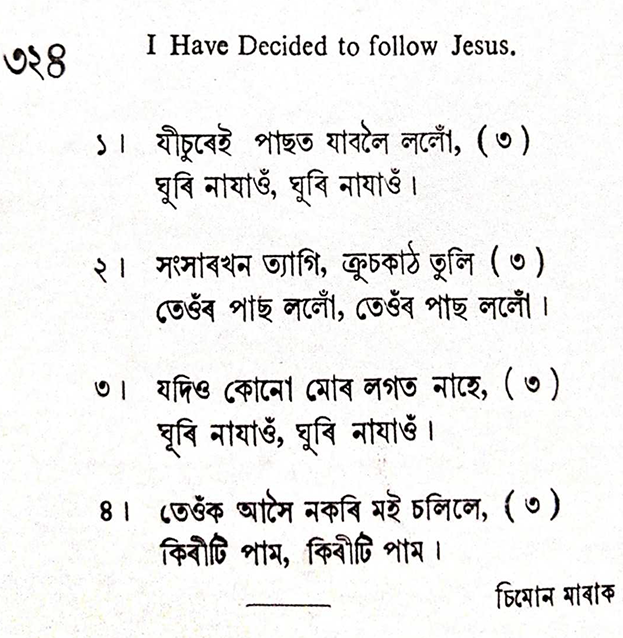

1. I have decided to follow Jesus;
I have decided to follow Jesus;
I have decided to follow Jesus;
No turning back, no turning back.
2. Tho' none go with me, I still will follow;
Tho' none go with me, I still will follow;
Tho' none go with me, I still will follow;
No turning back, no turning back.
3. My cross I'll carry, till I see Jesus;
My cross I'll carry, till I see Jesus;
My cross I'll carry, till I see Jesus;
No turning back, no turning back.
4. The world behind me, the cross before me;
The world behind me, the cross before me;
The world behind me, the cross before me;
No turning back, no turning back.
About 150 years ago,
there was a great revival in Wales, England. As a result of this, many
missionaries came from England and Germany to North-East India to spread
the Gospel. At the time, north-east India was not divided into many
states as it is today. The region was known as Assam and comprised
hundreds of tribes...Naturally, they were not welcomed. One Welsh
missionary succeeded in converting a man, his wife, and two children.
This man’s faith proved contagious and many villagers began to accept
Christianity. Angry, the village chief summoned all the villagers. He
then called the family who had first converted to renounce their faith
in public or face execution. Moved by the Holy Spirit, the man instantly
composed a song which became famous down the years. He sang:
"I have decided to
follow Jesus. (3 times)No turning back, no turning back."
-Dr. P.P. Job and
Indian preacher in His book “Why God Why”
As this hymn of commitment is sung, think about what it really means to follow
Jesus. When someone volunteered to follow Him, Jesus' response was “Foxes have
holes, and birds of the air have nests, but the Son of Man has nowhere to lay
his head” (Luke 9:58 ESV). This seems almost brutal, but it is true. The author
of this hymn was most likely a convert in India facing persecution and possibly
death for this commitment. As expressed through the song, this Christian had
taken to heart Jesus' warning: “No one who puts his hand to the plow and looks
back is fit for the kingdom of God” (Luke 9:62 ESV).
Text:
There are a variety of different stories about the origin of this hymn. All of
them agree that it was written in northeastern India by someone facing
persecution for his or her faith who wanted to affirm loyalty to Christ. In some
accounts, an Indian convert is the author. One of the more dramatic and
widespread stories comes from the bookWhy God, Why?by
Dr. P. P. Job, in which a Christian missionary first sang this song as he and
his family were being murdered for their faith.
Whatever its origin, this song has been passed down as a folk song, and the
number of stanzas and their content varies. Three stanzas appear in virtually
every version. The opening stanza is always “I have decided.” “The world behind
me” and “Though none go with me” are always included, in some order. Another
common stanza is “Will you decide now to follow Jesus?” which is usually fourth.
Some hymnals do not include this hymn because it implies, especially in the
opening line, that salvation is purely a human decision.
Tune:
This text is always sung to the melody that was passed down with it – ASSAM,
which is named after a region in northeastern India. It is an Indian folk song,
probably from the Garo tribe. This tune is quite flexible in terms of
accompaniment style and tempo. Choose a tempo that will accentuate the desired
mood, whether it is slow for quiet meditation on the seriousness of commitment
to Christ, or a more upbeat, march-like style. It is simple enough to be easily
learned, and therefore could work very well unaccompanied.
When/Why/How:
This song is appropriate whenever a song of commitment is desired. For use as
service or special music, a variety of choral settings exist, often combining
this text with another.“No
Turning Back with 'I Have Decided to Follow Jesus'”combines
this folk hymn with an original song by Joel Raney for SATB choir, unison choir
(either children or adult voices), and rhythm section.“I
Have Decided to Follow Jesus”is a slow, contemplative choral
arrangement of this simple song. Another setting of“I
Have Decided to Follow Jesus”includes a stanza of “He Leadeth
Me” in a three-part choral setting. This combination of texts reminds us that,
though we may claim to have “made a decision” to follow Christ, nevertheless God
is the One who leads us.
Note: The little I thought we knew about this gospel song’s origin
can be found on the Wordwise Hymns link. However, there is a much more
detailed and fascinating story on the Hymnary.org link. I have never
seen it written elsewhere but, knowing something of the history of the
region, it does seem possible.
Though the origin is obscure and the words are simple,
this song of commitment and testimony has a powerful message.
Some form of the word “follow” is found dozens of times in the
Gospels. It is particularly used by the Lord Jesus to call His
disciples. Of course, in the historical context, physical accompaniment
was involved. Those who were called to “follow” Christ left family and
jobs and traveled with Him from place to place. However, it was more
than that. They were committing themselves to a spiritual pilgrimage. In
that sense, Christ still has followers today.
A disciple of the Lord Jesus Christ is: committed totrustin
Him,obeyHim,learn fromHim,emulateHim,
andserveHim.
Here are a few examples of “following” Jesus from Matthew’s Gospel.
“Jesus, walking by the Sea of Galilee, saw two brothers, Simon
called Peter, and Andrew his brother, casting a net into the sea;
for they were fishermen. Then He said to them, ‘Follow Me, and I
will make you fishers of men.’ They immediately left their nets and
followed Him. Going on from there, He saw two other brothers, James
the son of Zebedee, and John his brother, in the boat with Zebedee
their father, mending their nets. He called them, and immediately
they left the boat and their father, and followed Him” (Matt.
4:18-22).
“As Jesus passed on from there, He saw a man named Matthew
sitting at the tax office. And He said to him, ‘Follow Me.’ So he
arose and followed Him” (Matt. 9:9).
“He who does not take his cross and follow after Me is not worthy
of Me. He who finds his life will lose it, and he who loses his life
for My sake will find it” (Matt. 10:38-39).
This latter description of discipleship is found a number of times in
the Gospels. It has a much deeper meaning than simply, “Bear your aches
and pains stoically.” Or to simply deny ourselves something (such as a
new pair of shoes, or another piece of cake). That can be a form of
asceticism. In the extreme, it would involve living in utter poverty.
But that’s not what the Lord is calling His followers to in the above
verses. Rather, in essence, it’s the dethronement of Self.
To deny Self is to repudiate self-centredness, and say a decisive
“No” to selfishness and self will. To take up the cross is the other
side of the same attitude and action. It’s saying “Yes” to the Lord.
There is also implied a public identification with Christ, to follow a
life of sacrificial service, whatever the cost.
With this background, we can see that the song deals with something
more profound than its simple words may suggest. And if, as seems to be
the case, the song originated in India, we know that, there, those who
turn to Christ have often been shunned by family and friends, and driven
from home, and from a place of employment. (This is true in some other
countries too.) There is a serious cost to the stand the author takes.
1) I have decided to follow Jesus,
I have decided to follow Jesus,
I have decided to follow Jesus–
No turning back, no turning back.
Consider the elements in that opening stanza. There is a specific
decision involved. It involves me and the person of Christ. And there’s
an expected continuance and continuity to the new direction of life that
has been chosen. Implied in the last line is the possibility of a
temptation to default on the commitment made, and a determination not
to.
2) The world behind me, the cross before me,
The world behind me, the cross before me,
The world behind me, the cross before me–
No turning back, no turning back.
Here are the two sides of the decision mentioned earlier. If there is
a determination to say “Yes” to Christ, whatever the cost, there is also
the other side of the coin: a determination to say “No” to the allure of
this sinful world, and its appeal to the old Self life (cf. Moses, Heb.
11:24-25).
3) Though none go with me, I still will follow,
Though none go with me, I still will follow,
Though none go with me, I still will follow,
No turning back, no turning back.
4) Will you decide now to follow Jesus?
Will you decide now to follow Jesus?
Will you decide now to follow Jesus?–
No turning back, no turning back.
The path of discipleship at times can be a lonely one. If we make
being liked, or being popular, our priority, we will surely falter on
the way. Finally, though we cannot turn back, we can encourage others to
join us and be companions on the way.
Questions:
1) For you, what is the best thing about being a follower of Christ?
2) What do you find the most difficult thing about it?
A song which encourages us to follow Christ that we might not walk in darkness
but light is "I Have Decided To Follow Jesus" (#280 inHymns
for Worship Revised). The text is usually identified as "traditional" or
"source unknown" or "anonymous." Some three stanzas, and possibly others,
are attributed to an unnamed "Garo prince" and are said to have been sung by a
group called the "Garo Christians" in the Garo region of Assam, India. Thus, the
song is thought to have originated among some hill tribes in India. These
stanzas were apparently introduced, and perhaps translated into English, in 1949
by Paul B. Smith. This version seems to have first appeared in a publication of
the Free Methodist Church,Choice
Light and Life Songs, compiled by LeRoy M. Lowell at Winona Lake, IN, in
1950, and the copyright was later assigned to Zondervan Music Publishers.
The song was first heard in the United States during the 1950’s and became
popular during the 1960’s. It was prominently featured in Billy Graham crusade
meetings. Other stanzas have been improvised to fit the tune. The tune (Assam)
is usually identified as an Indian folk melody or song from Assam, a state in
northeast India near the Brahmaputra and Barak rivers south of the Himalayan
mountains.
Assam is almost isolated from the other twenty Indian states by Bangladesh and
has a population of fifteen million people. About two-thirds are Hindu, and a
fourth Muslims. However, some of the tribes, such as the Garos, have been
converted to Christianity, and this hymn is reportedly used with new believers
as a statement of their decision to accept Christ and an encouragement to them
in following Jesus. The arrangement used in many of our books was made by
William Jensen Reynolds, who was born at Atlantic, IA, on Apr. 2, 1920, the son
of George Washington and Ethel Horn Reynolds. When he was five months old, his
parents moved to Oklahoma, where his father was a church music director.
Educated at Oklahoma Baptist University; Southwest Missouri State College, from
which he received that A. B. degree in 1942; Southwestern Baptist Theological
Seminary, from which he received the M. S. M. degree in 1945; North Texas State
College, from which he received the M. M. degree in 1946; Westminster Choir
College; and George Peabody College for Teachers, from which he received the Ed.
D. degree in 1961, he served seven years as a part-time church music director in
his student days, and then worked as music director with the First Baptist
Church in Ardmore, OK, from 1846 to 1947, and at the First Baptist Church in
Oklahoma City, LK, from 1947 to 1955.
After this, Reynolds was employed by the Church Music Department of the Baptist
Sunday School Board in Nashville, TN, and in 1956 became its music editor. In
1962 he became director of editorial services at the Church Music Department and
in 1971 was appointed head of the department. As a composer and arranger
of sacred choral music, he is a member of ASCAP and the Hymn Society of America.
His version of "I Have Decided to Follow Jesus" was copyrighted and published in
the 1959 Assembly Songbook. It contained a new stanza written by John Clark
(some sources give his birthdate as 1920, and it is interesting that the tune’s
arranger was also born in 1920, but the name is said to be a pseudonym for an
author who prefers to remain anonymous). Reynolds was music director for the
Bapatist World Youth Conferences at Toronto, Ontario, Canada, in 1958, and at
Beirut, Lebanon, in 1963; and for the Baptist World Alliance at Rio de Janeiro,
Brazil, in 1960. In addition, he was a member of the Hymnal Committee for theBaptist
Hymnalof 1956 and general editor for theBaptist
Hymnalof 1975. His published books includeA
Survey of Christian Hymnodyof 1963,Hymns
of Our Faithof 1964,Christ
and the Carolsof 1967,Congregational
Singingof 1975, theCompanion
to the Baptist Hymnalof 1976, andSongs
of Gloryin 1990.
One of the first major hymnbook inclusions of "I Have Decided to Follow Jesus"
was in Broadman’sChristianPraiseof
1964. Other arrangements have been made for different hymnbooks, but Reynolds’s
remains the most often used in our books. Among hymnbooks published by members
of the Lord’s church during the twentieth century for use in churches of Christ,
the song is found in 1971Songs
of the Church(the Reynolds version), the 1990Songs
of the Church 21st C. Ed., and the 1994Songs
of Faith and Praise(in the latter two arranged by Pam
Stephenson) all edited by Alton H. Howard; the 1977Special
Sacred Selectionsarranged by editor Ellis J. Crum; the
1978/1983Church
Gospel Songs and Hymnsedited by V. E. Howard; and the 1992Praise
for the Lordedited by John P. Wiegand; as well asHymns
for Worship(the last three using the Reynolds version). Songs
like this which are highly repetitive (referred to as "praise songs" by some and
"camp songs" by others) may be fine for small children to learn basic Bible
truths, but in our worship services we are to be "teaching and admonishing one
another in psalms and hymns and spiritual songs" (Col. 3.16). Thus, we should
have something more than merely repeating one phrase three times and another
twice per stanza (which seems to come close to "vain repetitions," Matt. 6.7).
Therefore, I have made an arrangement which I believe has a little more
substance to it.
The hymn mentions several aspects of following Christ.
I. According to stanza 1, we must make a commitment to follow Jesus
"I have decided to follow Jesus; I will do just what the Savior pleases,
And He will heal me of sin’s diseases, No turning back, no turning back."
A. We need to have the attitude that we will follow Jesus wherever He goes:
Matt. 8.19
B. To do so, we must do exactly what He tells us to do: Matt. 7.21
C. And when we do, He will heal us of sin’s diseases: Mal. 4.2
II. According to stanza 2, we mus follow Jesus even if no one else goes with us
"Though none go with me, I still will follow, O’er cold, dark mountain, through
gloomy hollow;
In sinful pleasures I will not wallow, No turning back, no turning back."
A.Once we start to follow Jesus, we must not turn back even if we are alone: Lk.
9.62
B. And we must follow Him, even through the trials and tribulations of life:
Jas. 1.2-4
C. Also, to follow Jesus, we must refuse the pleasures of sin as Moses did:
Heb. 11.25
III. According to stanza 3, we must follow Jesus by putting the world behind us
"The cross before me, the world behind me, In Jesus’ footsteps you’ll always
find me;
I will not let Satan’s evil blind me, No turning back, no turning back."
A. We put the world behind us because we are not to be conformed to it: Rom.
12.1-2
B. Rather, we must walk in the footsteps of Jesus’ example: 1 Pet. 2.12
C. And to do so we must not allow Satan to blind our minds: 2 Cor. 4.4
IV. According to stanza 4, we must follow Jesus by carrying our own cross
"Till I see Jesus, my cross I’ll carry, So when He calls me I will not tarry,
And from His pathyway I will not vary, No turning back, no turning back."
A. To follow Jesus means to bear whatever burden serving Him places on us:
Matt. 16.24
B. Therefore, we must be like those early disciples who immediately left all
and followed Him: Mk. 1.17-20
C. And we must never vary or stray from that strait and narrow path: Matt.
7.13-14
V. According to stanza 5, we must invite others to follow Jesus too
"Will you now follow this loving Savior, Obey His will, and receive His favor,
Then show you love Him by your behavior, No turning back, no turning back."
A. It is essential in following Jesus to tell others about Him, as Andrew did:
Jn. 1.41-42
B. Thus, we must encourage people to obey Christ that they might be saved: Heb.
5.8-9
C. Then, we must encourage them to show their love for Him by continuing to
keep His commandments: 1 Jn. 5.3
CONCL.:
This is a very simple hymn with a basic message which is stated in such a way
that even a child can understand it. It may not contain any "deep, theological
truths." However, it serves to remind me that because I wish to be a Christian
and please Him who saved me from sin, no matter what happens to me in this life,
"I Have Decided To Follow Jesus."
“I Have Decided to Follow Jesus”
by Simon Kama Marak. (formerly attr. to Sadhu Sundar Singh)
The Faith We Sing, 2129
I have decided to follow Jesus;
I have decided to follow Jesus;
I have decided to follow Jesus;
No turning back; no turning back.
Sometimes even a simple hymn may provide problematic challenges for the
researcher. Usually hymnologists are able to locate documentation in print
or find facsimiles of publications upon which to base their research. Folk
songs or hymns of non-Western origin sometimes require researchers to piece
together information like a jigsaw puzzle and draw tentative conclusions
based on the information at hand. Such is the case of “I Have Decided to
Follow Jesus,” a hymn where traditional sources of scholarship are virtually
nonexistent, and a researcher must rely almost totally on internet sources.
While internet sources can be helpful, they require careful scrutiny.
Very few hymnals ascribe an author or composer to the song, usually
indicating “source unknown” or “anonymous.” Yet, there is no question that
this simple, sincere tune is widely sung. Several hymnals produced during
the decade of the 1950s include this song, the earliest catalogued inHymnary.orgbeingChoice
Light and Life Songs(Winona Lake, IN, 1950). Because of
numerous attributions of authorship, this article will discuss each of the
origin narratives and draw conclusions based on evidence.
Baptist hymnologist William J. Reynolds describes the origins of the song as
follows:
This is a folk song that originated in India as a song of new converts to
Christianity among the Garo tribe who live in an area which is now the state
of Meghalaya, but was until 1970, the state of Assam, in northeastern India.
William J. Reynolds discovered the song in 1958 in a small undated
collection of gospel songs that had been published in Australia. With two
original stanzas, and a third by John Clark, the melody was arranged by
Reynolds and first published in Assembly Songbook (Nashville, 1959, No. 17).
The tune [ASSAM] was named by the arranger for inclusion in Christian Praise
(1964). (Reynolds, 1976, p. 191.)
This brief paragraph provides most of the scholarly information available.
“John Clark” is one of several pseudonyms used William J. Reynolds. The song
appeared in earlier evangelical convention collections before Reynolds found
it in an Australian publication. Given the prominence of Reynolds’ work,
however, his publication of the song in 1959 and in subsequent hymnals, and
his designation of the name ASSAM to the melody appears to have propelled
the song into greater usage. Donald P. Hustad, hymnal editor and one-time
organist for the Billy Graham Crusades, noted, “This anonymous song appeared
in the United States during the 1960’s and was prominently featured in Billy
Graham crusade meetings. It may have originated among national Christians in
India” (Hustad, 1978, p. 152). Most subsequent publications of the song
designate the tune as “anonymous” or “source unknown,” a few indicating
“Folk Melody from India,” “Attributed to an Indian prince,” or “Attr. S.
Sundar Singh.” Since this hymn appears in more than fifty collections in
North America published since 1950, it has obviously been formative for many
and deserves our attention.
MUSICAL INTERNAL EVIDENCE IN INDIAN CULTURE
Let us begin with the internal evidence available to us—evidence contained
within the song. The tune name most often assigned to the hymn is ASSAM, a
state in far northeastern India near the Himalayas. Earliest missionary
activity in this region can be traced back to 1626, before British colonial
rule, when two Portuguese Jesuit priests visited the area. These priests
were followed by others who had a more lasting influence (Syiemlieh, 2012,
p. 511). Protestant mission activity in this part of India was highly
influenced by American Baptist missions. This is the result of the influence
of Adoniram Judson (1788-1850), a pioneering Baptist missionary who
established Christianity in Burma (now Myanmar), adjacent to the state of
Assam, at that time a part of British India (1824-1937). The extent of
Baptist missions in Assam is documented in the Jubilee proceedings of The
American Baptist Missionary Union that focused on the Assam Mission in 1886,
indicating that mission activity extends back to 1836, when a missionary
came from Burma (Papers
and Discussions, 1886, p. 20; Syiemlieh, 2012, p. 512). The first
Assamese convert was baptized in 1841 (Papers
and Discussions, 1886, p. 22). Other mission groups followed. Thus, the
tune name long associated with this text appears rooted in a significant and
sustained center of Christian activity.

Looking at the music itself, most available YouTube recordings provide
little internal evidence that suggests that the song was composed in or
based on northern Indian styles. Almost all renditions adopt a 1960s
folk-style accompaniment, often with guitar. However, if one looks more
closely at the melody only, there are some possible indications of its
Indian origins. First of all, the tune, usually appearing in C Major, does
not imply the usual harmonic changes found in most Western folk songs. In
fact, the melody revolves almost totally around a C Major chord and does not
appear to be based on the usual Western harmonic assumptions. ASSAM would
adapt quite well to traditional Indian drone accompaniments on a
multi-stringedsitāror
the open fifths of theśruti(an
instrument with bellows that provides a drone in Indian classical music).
The following YouTube video provides a sustained drone being played on theśrutibox
in C (orSain
the Indian scale).Using
this video, play the drone and hum ASSAM. You may agree that it fits
very well with only a simple drone used in congregational singing and with
simpler Indian folk styles.A
recording provided by ethnomusicologist Paul Neeleydemonstrates
a rendition onsitārin
what Dr. Neeley calls a fusion style with some Western influences but also
some improvisation characteristic of this instrument in India.
The tradition of thebhajanmay
provide further insight.Bhajanis
a Hindustani popular devotional song of reverence with a spiritual theme.
Thebhajanhas
roots in ancient Sanskrit (bhajana),
and songs derived from thebhaktireligious
tradition are used as “an approach to union with God” (Simon, 2020, n.p.).Bhajansare
composed in a local language and used in the context of Indian religions,
especially Hinduism and Jainism. The musical structure is open with no set
forms, and the melodies are simple and more direct than the complex
ornamented melodies found in Indian classical music (Simon, 2020, n.p.).
Rites involvingbhajanare
congregational, ranging from small groups to several thousands and may be
performed any place, including the lively practice of singing devotional
songs while on pilgrimage to holy sites. While missionaries may not have
encouraged congregational singing in local styles, this does not mean that
local musical practices including use of instruments andrāgas(a
complex aesthetic system of melodic scales) were not employed by Indians who
were isolated from Western styles in the mid-nineteenth century. It is
interesting to note that the Major scale (Ionian) that forms the tonal
reservoir for the melody of “I Have Decided to Follow Jesus” is identical to
theBilãwal(orBilāval)rāga,
a basic scale of North Indian or Hindustani music beginning in the early
part of the nineteenth century. Indiarāgasare
said to be of divine origin and induce specific feelings in combination with
distinctivetāla(time
cycles). TheBilãwalis
a morningrāgathat
carries with it a deep feeling of devotion. The national anthem of India,
“Jana Gana Mana” (“Thou art the ruler of the minds of all people”), employs
theBilãwalrāga(SeeGrove
Music Online, Subcontinent of India, 2020, n.p. for more information).
Therāgasystem
has been used in the Assam region for thousands of years. Thus, therāgaupon
which ASSAM may be based appears to be ideal for communicating the
devotional meaning of the text.
Thus, internal evidence derived from the traditional tune name ASSAM, the
level of mission activity in the region, and the possible correlation of the
melody with traditional local musical practices suggest a connection with
northeastern India. It is a stretch to imply that “I Have Decided to Follow
Jesus” is a Christianbhajan,
however, but the cultural context in northern India suggests that composing
popular devotional songs would be a common practice. For a recent Napali
Christian interpretation of this song,listen
to a recording provided by ethnomusicologist Paul Neeley.
PERAMANGALAM PORINJU JOB
A possible origin of this song was spread through the ministry of Indian
evangelist Peramangalam Porinju Job (1945-2012), who was internationally
known and sometimes referred to as “the Billy Graham of India.” Numerous
internet accounts repeat virtually the same story taken from Job’s bookWhy
God, Why?(n.d., information unavailable to this author).
The narrative begins, “About 150 years ago, there was a great revival in
Wales, England. As a result of this, many missionaries came from England to
northeast India to spread the Gospel” (Stier, 2014, n.p.). The Assam region
consisted of many tribes that were known for their aggressive head-hunting.
Welsh missionaries came into northeastern India in 1841 after the formation
of the Welsh Calvinist Methodist Foreign Missionary Society and established
their presence in this region throughout the 1840s (Avery, 2016, n.p.;Papers
and Discussions, 1886, p. 211). This may have been the revival referred
to in Job’s book—“about 150 years ago”—though there was another awakening in
1859.
According to Job’s account, the words that form the basis for the song were
the last words spoken by a martyred Garo tribal man from Meghalaya (then a
part of Assam) named Nokseng. Accounts vary, some claiming that Nokseng was
evangelized through the efforts of an American Baptist missionary (Bibliatodo
Reflection, 2020, n.p.) and others suggesting a Welsh Methodist
missionary evangelized the man and his family (wife and two children)
[Stier, 2014, n.p.]. The account of what happened is taken from Job’s book
and appears on several internet sources. Upon hearing of the man’s
conversion, the
[a]ngry . . . village chief summoned all the villagers. He then called the
family who had first converted to renounce their faith in public or face
execution. Moved by the Holy Spirit, the man sung his reply, “I have decided
to follow Jesus. No turning back.”
Enraged at the refusal of the man, the chief ordered his archers to arrow
down the two children. As both boys lay twitching on the floor, the chief
asked, “Will you deny your faith? You have lost both your children. You will
lose your wife too.”
But the man replied, again singing, “Though none go with me, still I will
follow. No turning back.”
The chief was beside himself with fury and ordered his wife to be arrowed
down. In a moment she joined her two children in death. Now he asked for the
last time, “I will give you one more opportunity to deny your faith and
live.”
In the face of death, the man sang, “The cross before me, the world behind
me. No turning back.” He was shot dead like the rest of his family.
But with the deaths, a miracle took place. The chief who had ordered the
killings was moved by the faith of the man. . . In spontaneous confession of
faith, he declared, “I too belong to Jesus Christ!” When the crowd heard
this from the mouth of their chief, the whole village accepted Christ as
their Lord and Savior (Stier, 2014, n.p.).
Unable to locate Job’s bookWhy
God, Why?, it is difficult to ascertain the source of the story and how
Job came to learn of it. Such a compelling narrative, however, would seem to
have been documented in other missionary accounts, but this author could not
find such evidence. American Baptists record that “Nidhi Levi was the first
Assamese convert, baptized at Jaipur in 1841 by Dr. Bronson. In 1846 there
were a number of converts at each station (Papers
and Discussions, 1886, p. 22). A paper delivered in 1886 by Rev. E. G.
Phillips describes in some detail the early work of the Welsh Calvinist
Methodist Mission beginning in 1841 (Papers
and Discussions, 1886, pp. 213-216). The indigenous people are
described as “non-idolatrous, demon-worshiping savages of the hills” (p.
213), but the work soon prospered. It would seem that the conversion and
martyrdom described by Dr. Job would have been legendary in the missionary
annals, but it does not appear.
Sadhu
Sundar Singh
SADHU SUNDAR SINGH
A few more recent hymnals indicate that the song is attributed to Sadhu
Sundar Singh (1889-1929), a Sikh who converted to Christianity as a boy and,
as a result, was rejected by his father (For a description of Singh’s
conversion seeTentmaker,
n.d., n.p.). He became an Indian Christian missionary who, even after
conversion, adopted the yellow robe and turban of a Hindu sadhu in 1906.
Singh maintained his Sikh dress while attending the Anglican seminary in
Lahore (now part of Pakistan), but was discouraged from completing his work
because he would not become an Anglican priest. He preached a universalist
theology, believing that all people, including Buddhists, Hindus, and Sikhs,
would eventually attain salvation, a view that received no recognition or
affirmation among Christian missionaries. He traveled widely outside of Asia
in Great Britain, the United States, and Australia, and is said to have
influenced other spiritual leaders such as Mahatma Gandhi and C.S. Lewis
(Lindskoog, 2005, n.p). He found the West too materialistic and was most at
home living an ascetic lifestyle and teaching in Tibet. Singh is the subject
of several biographies and is considered to be one of the most significant
figures in Indian Christianity (Singh, 2019, n.p.). It is fair to say,
however, that Singh was the kind of unorthodox and influential religious
figure who was very attractive to Western audiences and to whom various
stories and legends could easily be attached.
This author could find no mention of Singh’s connection to “I Have Decided
to Follow Jesus” in any sources on Singh and his life. One internet link
states that, following the martyrdom of the Garo family, Singh was
responsible for forming the words spoken by the man into a song (Bibliatodo
Reflection, 2020, n.p.), but this is not corroborated by scholarly
accounts available to this author. L. Richard, a scholar of Hinduism who has
conducted extensive research in India on Singh, is skeptical of the veracity
of the song of the Garo martyr as it “fits a pattern of mythologizing” that
characterizes its era. Richard continues by noting, “No one has ever
referred to [Singh] as a singer . . . He did not know many martyrs; there
were not many in his time. His one famous martyr story is beyond belief, and
there is no room for a song in that story” (Emails to author, 2020, n.p.).
If Singh is responsible for the music, it may reflect his journeys abroad in
1920 and 1922. Because the song is in English, these experiences beyond Asia
may have influenced its possible Western compositional leanings (Neeley,
2020, n.p.).
SIMON KARA MARAK
The most persuasive and documented possibility is that the composer was
Simon K. Marak, an A·chik (Garo) pastor, schoolteacher, and missionary from
Jorhat, Assam. An article written by Sengbat G. Momin, a Garo Baptist layman
and archivist, provides a helpful introductory biography of Simon Marak,
based on numerous interviews with family members and contemporaries, and
consultation of Assam American Baptist Missionary Reports (Momin, 2017, pp.
85–90). The account appeared in a sesquicentennial collection of eleven
articles, published bilingually in English and Garo, detailing the work of
the Garo Baptist Convention since the founding of the first congregation in
1867. The chapter on “I Have Decided to Follow Jesus” is unique among the
other ten, detailing the history of various Garo Baptist Convention
ministries. Sengbat Momin’s chapter focuses on the hymn’s composer and
history, indicating that Marak and his hymn hold a prominent place in the
spirituality and identity of Garo Baptists. Momin’s account indicates both
the significance of the song in Assam and acknowledges it as a gift from
Garo Christians to the worldwide Christian community.
The exact date of the song’s composition is unknown, but interviews with
Marak’s children indicate that they grew up hearing the song from their
earliest years beginning in the late 1930s and early 1940s. Contemporaries
indicate that it was a regular feature of chapel services at the Jorhat
Mission School, sung in churches, and A·chik fellowship occasions at least
from 1944. Momin concludes from interviews that Marak composed the song
early in his ministry, sometime between 1935–1940, while serving as an
assistant pastor in Jorhat. Momin notes, “Simon sang the song every day and
that was how all his children learnt the song. Wherever his children went
after they got married, this song also went with them and thus the song
spread to many places” (Momin, 2017, p. 88).
According to the composer’s youngest surviving daughter, Onima, Simon Marak
composed the song to accompany his travels from church to church as he
preached. Simon indicated, “the song should be sung whenever the ‘good news
or the gospel was being preached’” (Momin, 2017, p. 85). It may have
functioned as a lyrical autobiographical response to a life full of struggle
and pain. Citing Romans 8:35, Onima acknowledged these difficulties,
commenting: “While Simon was working as the Assistant pastor, he must have
remembered how God remained faithful throughout. Therefore, he must have
written this song with tear-filled eyes remembering God’s faithfulness and
how he raised him from the tragedies that he faced” (Momin, 2017, p. 88).
Marak’s tragedies and struggles strengthened his effectiveness as a pastor.
Known for his phenomenal memory, Marak recalled the encounters and life
events of all he met, forming the basis for his abiding reputation as a
counselor and valuable resource person in the Baptist Association.
Though Simon Marak’s first language was A·chik (Garo), his work and life in
Jorhat required fluency in the Assamese language. Thus, the song was
initially composed in Assamese in two stanzas with two additional stanzas
added later. It appears with four stanzas in three Assamese hymnals (1960,
1972, and 1978). Magdola Garhwall, a Christian sadhu, translated the song
into Hindi. Only later was it translated into A·chik by Christians in the
Garo hills. His five daughters by his fourth wife moved to various locations
in the region after they married. As a result, the song also spread
throughout Assam through Marak’s daughters.

Sengbat Momin attributes the international distribution of the song to
evangelical composer John W. Peterson (1921–2006), who, according to Momin,
set the song in 6/8 meter (Momin, 2017, p. 89). Beginning in the mid-1950s,
Peterson was editor of Singspiration Music (a part of the Zondervan
Corporation, now with Brentwood-Benson Music) in Grand Rapids, Michigan.
While the song appears prominently in publications, correspondence with Tom
Catzere, director of John W. Peterson Music, was unable to determine the
song’s earliest publication (Email to author, June 12, 2020). To his
knowledge, the song always appeared in 4/4 meter in collections edited or
compiled by Peterson except forPraise!
Our Songs and Hymns(1979), where the meter is 2/2.
Catzere did not know when Peterson became familiar with the song.
While some questions of transmission and dissemination remain, the most
documented and authentic origin narrative suggests that Simon K. Marak
composed this hymn and that it became a theme song for his life and
ministry.
THE TEXT
All hymnals include the first two stanzas:
1. I have decided to follow Jesus. . . No turning back.
2. Though none go with me [Though no one join me] I still will follow. . .
No turning back.
Sengbat Momin’s account notes that “Simon wrote only two verses in the
beginning. He added two more verses later on, making it a four-verse song” (Momin,
2017, p. 89). When this author requested a translation of the four stanzas
that appear in the Assamese hymnal, the translator of the article sent a
copy of the hymn as found in theBaptist
Hymnal(2008), where the two additional stanzas read as
follows:
3. My cross I’ll carry till I see Jesus. . . No turning back.
4. The world behind me, the cross before me. . . No turning back.
William Reynolds added the third stanza—“My cross I’ll carry”—under the
pseudonym of John Clark for a 1959 publication. It appeared again inChristian
Praise(1964), a hymnal prepared under Reynold’s
supervision, where he, the arranger, named the tune ASSAM. It is possible
that the additional stanza composed by Reynolds found its way to the Baptist
community in Assam and was translated into Assamese by Marak. Hymnals
produced by Broadman Press (including the later names Convention Press and
LifeWay) use this four-stanza version.
Hope Publishing Company hymnals omit the stanza composed by Reynolds and
substitute the following, which serves as an evangelical altar call
following the sermon:
Will you decide now to follow Jesus? . . . No turning back.
Hymnals not associated with the Baptist Press or Hope Publishing Company
include only three stanzas, 1., 2., 4., cited above, including several
African American collections.
Several scriptural references have been cited as the basis for the words
including John 12:26a—“If any man serve me, let him follow me; and where I
am, there shall also my servant be” (KJV)—and the narrative of the calling
of the disciples in Mark 1:16-20.
This hymn has been cited as a prime example of “decision theology”—the
belief held among evangelicals, including Baptists and Methodists, that each
person must make a conscious decision to follow Christ and be “born again.”
Thus, this hymn appears primarily in hymnals associated with evangelicals as
well as convention publications used in revival settings. All of the origin
narratives suggest that the use of this song supports this theological
perspective, with Marak’s context being the most viable.
This apparent “free will” stance of the song has caused some controversy
among Calvinist and conservative Lutheran groups about its theological
validity. As one blogger states, “There is no making a decision for Jesus.
He comes to you in word and sacrament and saves you. You need God the Holy
Spirit to come to you and change your heart so that you can see the things
that are spiritually discerned” (Armchair Theologian, 2017, n.p.). An
evangelical blogger responded to this argument as follows,
. . . for the Calvinists, it is helpful to know the history, to understand
that not all music was written in the context of debates about God’s role
vs. people’s work in salvation. In this song, the word “decided” doesn’t
have a minimalistic feel to it, but rather has a once-for-all commitment
attached to it; a commitment that the author knew would lead to imminent
death (Johnson, 2013, n.p.).
What appeared to be a simple campfire song sung by generations of young
people, has inspired a robust theological debate.
CONCLUSION
While neither the story of the martyrdom of the Garo man and his family and
Singh’s possible role in preparing the song can be verified by this author,
I can attest, having grown up in an evangelical context, that similar and
verifiable missionary narratives of faith and martyrdom are a part of the
tradition. Whether the evidence chronicled above isfact,
there is undoubtedlytruthto
be derived from the general cultural and historical contexts and accounts of
rejection, even banishment, experienced by many converts. Historically, some
of the contextual circumstances can be documented, including extensive
missionary activity in the region by several groups, especially American
Baptists. Furthermore, the internal evidence provided by the music itself,
when compared with long-established traditional musical practices of
northeastern India, suggests that the melody may fit into therāgasystem.
The song’s simple structure and message could possibly draw upon the larger
spirituality of thebhajantradition.
The ultimate efficacy of “I Have Decided to Follow Jesus” lies in its
intrinsic message and compositional coherence that come together in a way
that expresses the experience and faith of those who sing it. This efficacy
has been proven in this case for nearly three quarters of a century in
numerous North America publications.
A line from the second stanza was chosen as the title for the television
dramaThough
None Go With Me(2006), a film that explores the hardships
faced by a woman who devoted her life to God.
SOURCES
Andrew J. Avery, Review of Andrew May,Welsh
Missionaries and British Imperialism: The Empire of Clouds in North-east
India(2015),Reviews
in History(July 2016),https://reviews.history.ac.uk/review/1960(accessed
10 April 2020).
The author expresses gratitude to Brightstar Jones Syiemlieh for information
leading to the article by Sengbat Momin and to the translator of the article
Dr. Amanda Macdonald for additional assistance.
"I Have Decided to Follow Jesus"
is aChristian
hymnthat originated inAssam,
India.
According to P. Job, the lyrics are
based on thelast
wordsof Nokseng, aGaroman,
a tribe fromMeghalayawhich
then was inAssam,
whoconverted
to Christianityin the middle of the 19th century
through the efforts of an American Baptistmissionary.
He is said to have recited verses from the twelfth chapter of the
book of John as he and his family were killed. The formation of the
martyr's words into a hymn has been attributed to the Indian
missionarySadhu
Sundar Singh.[1]
An alternative tradition attributes
the hymn to pastor Simon K Marak fromJorhat,
Assam.[2]
The melody of the song is Indian, and
was titled "Assam" after the region where the text originated.[3]
An American hymn editor, William
Jensen Reynolds, composed an arrangement which was included in the
1959Assembly Songbook. His version became a
regular feature ofBilly
Graham's evangelistic meetings in America and elsewhere,
spreading its popularity.[4]
Due to the lyrics' explicit focus on
the believer's own commitment, the hymn is cited as a prime example
ofdecision
theology, emphasizing the human response rather than the action
of God in givingfaith.[5]This
has led to its exclusion from somehymnals.[5]ALutheranwriter
noted, "It definitely has a different meaning when we sing it than
it did for the person who composed it."[6]
Tamil Christian Keerthanaior
kīrttaṉai (Keerthanai meaning Songs of Praise) are devotional
Christian songs in Tamil. They are also referred to as "lyrics" (a
genre term) by Tamils in English.
These are mostly a collection of
indigenous hymns written by Protestant Tamil Christian poets. A few
of them are translations of Christian hymns from other languages.
They use the kīrttaṉai form that includes the classical karnatak
raga (mode) and tala (rhythmic cycle) designations for each song.
Some of these ragas and talas are followed in Church practice, while
from the 1940s, other kīrttaṉai were adapted to simpler Western
style tunes in major scale that more easily facilitated the
accompaniment of organ.[1]
These hymns were written in the early
stages of Protestant Christianity in India by composers such asVedanayakam
Sastriarwho worked under the German Lutheran
missionaries in the Tanjore area (likely the 1780s on). They were
first published for broad use among the Protestant denominations and
mission societies in 1853 by the American Congregational (ABCFM)
missionary Edward Webb, in the hymn book titledChristian
Lyrics for Public and Social Worship. Webb and eight of his
catechists spent a couple months learning the songs from Vedanayakam
Sastriar and then transmitted them orally throughout the towns and
villages of the Protestant missions.[2]

{kind=link}